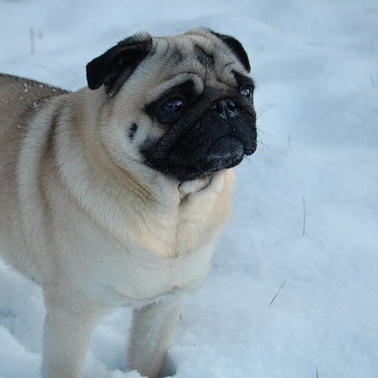
Breathing & heatFlat or short nose
Pug, French or English Bulldog, Boston Terrier, Boxer, Shih Tzu, Pekingese, Japanese Chin, Brussels Griffon, Dogue de Bordeaux
Pick short, cool, shady routes with water and a quick way out.
- Noisy or laboured breathing at rest or on light effort isn’t normal.
Good to know
Cavaliers and some crosses have shorter muzzles than they look. Extra weight or airway disease adds risk.
Photo: Pug, Nicklas Iversen, CC BY-SA 4.0, cropped (Wikimedia Commons)
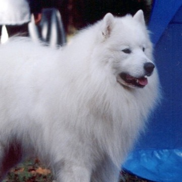
Coat & heatDense or double coat
Chow Chow, Husky, Malamute, Akita, Samoyed, Keeshond, Newfoundland, Bernese Mountain Dog, German Spitz
Go in the coolest hours, with shade along the way.
- Coping with cold doesn’t mean coping with heat. Stop at the first change in pace or breathing.
Good to know
Dark coats, extra weight and dogs new to heat need even more care.
Photo: Samoyed, Pleple2000, CC BY-SA 3.0, cropped (Wikimedia Commons)
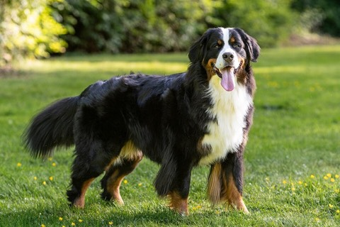
Joints & rescueLarge, giant or heavy
Great Dane, Saint Bernard, Newfoundland, Bernese, Leonberger, Mastiff, Rottweiler, large livestock guardians
Choose gentle descents and a route where you could get help if you can’t carry your dog.
- Turn back for a shorter stride, stiffness or a changed gait. These can show first on downhills.
Good to know
Large-breed puppies and dogs with arthritis or past joint surgery need an exercise plan from their vet.
Photo: Bernese Mountain Dog, FriendlyToaster, CC BY 4.0 (Wikimedia Commons)
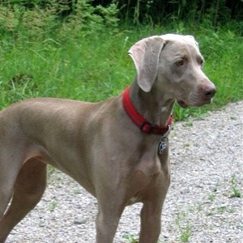
Bloat (GDV)Deep chest
Great Dane, Weimaraner, Irish or Gordon Setter, Standard Poodle, Doberman, German Shepherd, Saint Bernard
Know where the nearest emergency vet is, and follow your vet’s feeding advice.
- Repeated retching that brings nothing up, drooling, distress or a swelling belly is an emergency.
- Before remote trips, ask your vet about GDV risk and preventive gastropexy.
Good to know
Any breed can get gastric dilatation or volvulus. Age, a close relative with GDV and large or giant size can add risk.
Photo: Weimaraner, Rufus46, CC BY-SA 3.0, cropped (Wikimedia Commons)
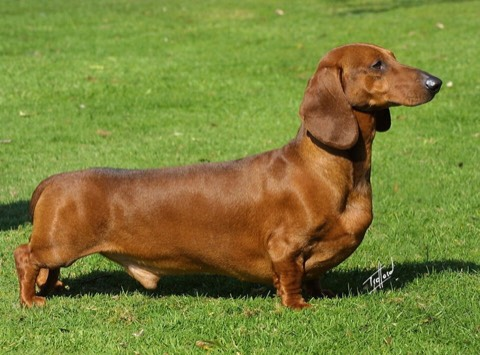
Back & dropsLong back or short legs
Dachshund, Corgi, Basset Hound, Pekingese, Beagle, Lhasa Apso, Shih Tzu and other chondrodystrophic dogs
Choose smooth ground with few jumps, ledges or high steps.
- Stop for back or neck pain, trembling, weakness, crossing hind feet or a new wobbly gait.
Good to know
After a previous disc episode, let your vet set the activity plan.
Photo: Dachshund, Katemil94, CC BY-SA 4.0 (Wikimedia Commons)
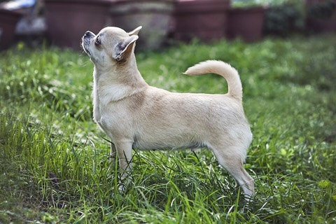
Stride & coldSmall or toy size
Chihuahua, Yorkshire Terrier, Maltese, Papillon, Toy Poodle, Pomeranian, Miniature Pinscher and small crosses
Keep walks short with sheltered rests, and bring a secure carrier.
- Wind, rain and cold wear small dogs down fast, especially when they stop.
Good to know
Don’t count on carrying your dog over ground that’s unsafe for you.
Photo: Chihuahua, Caterinarufo, Public domain (Wikimedia Commons)
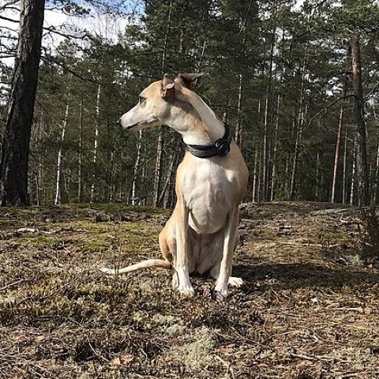
Cold, sun & skinThin, short, hairless or pale coat
Greyhound, Whippet, Italian Greyhound, Vizsla, Pointer, Dalmatian, Chinese Crested, Xoloitzcuintli; dogs with pink noses or pale skin
Pack a dry warm layer, and plan shade on sunny, exposed routes.
- Head back if your dog shivers, lifts paws, hunches or won’t walk.
- Ask your vet about dog-safe sun protection for thin-furred or pale skin.
Good to know
Sharp limestone and scrub can cut thin skin.
Photo: Whippet, WhippieGamer, CC BY-SA 4.0, cropped (Wikimedia Commons)
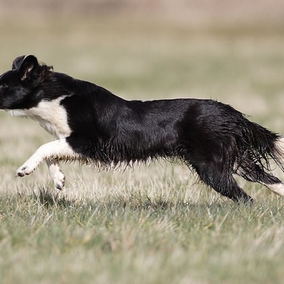
Drive & pacingHigh working or sporting drive
Border Collie, Australian Shepherd, Cattle Dog, Belgian Malinois, working Spaniels, Retrievers, Pointers and Setters
Plan shady rests before your dog looks tired.
- Put the lead on before livestock. In heat, stop repeated chasing, fetching or circling.
Good to know
Keen dogs can forget to pace themselves and overheat while still eager. Watch their coordination and recovery.
Photo: Border Collie, Hans-Jörg Hellwig, CC BY-SA 3.0, cropped (Wikimedia Commons)
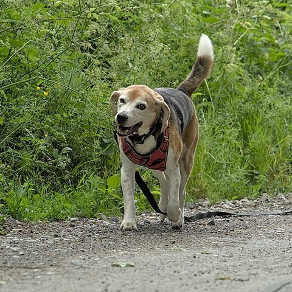
Recall & wildlifeStrong scent or prey drive
Beagle, Bloodhound and scent hounds; Terriers; Pointers and Setters; Sighthounds; Nordic and primitive breeds; many crosses
Use a lead or long line near wildlife, livestock, cliffs or roads.
- Don’t try off-lead for the first time on risky ground.
Good to know
Good recall at home may not hold near marmots, deer or livestock. Local lead rules always come first.
Photo: Beagle, Benoit Brummer (Trougnouf), CC BY 4.0, cropped (Wikimedia Commons)
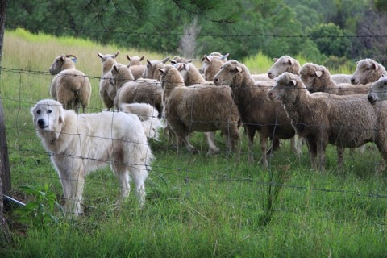
Space & guardingGuardian or territorial instinct
Maremma, Great Pyrenees, Kuvasz, Kangal, Anatolian Shepherd, Tibetan Mastiff, Hovawart and guardian-type crosses
Choose open trails with room to keep your distance from dogs, people and livestock.
- Never approach a working guardian dog or the animals it protects.
Good to know
If your dog goes still, blocks the way or barks as others approach, avoid narrow spots and turn back early.
Photo: Maremma Sheepdog, Andy Fitzsimon, CC BY-SA 2.0 (Wikimedia Commons)
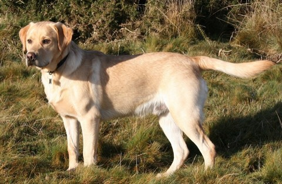
Medical historyCollapse or noisy breathing before
Exercise-induced collapse is known in Labradors and some related breeds. Border Collies and related herding breeds can also collapse after exercise. Laryngeal paralysis is most common in older large dogs, especially Labradors.
Before you hike, get a diagnosis and a limit from your vet. Don’t “test” your dog on a remote trail.
- Heat, excitement and hard exercise can make these worse. Collapse, confusion, staggering, blue gums or struggling to breathe need urgent help.
Good to know
In an older large dog, a changed bark, raspy breathing, coughing, gagging or new heat intolerance needs a vet check before the next hike.
Photo: Labrador Retriever, IDS.photos from Tiverton, UK, CC BY-SA 2.0 (Wikimedia Commons)
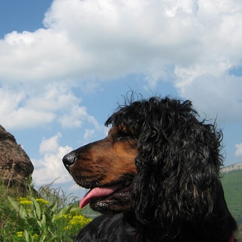
Grass awnsLong coat, feathering or floppy ears
Spaniels, Setters, long-coated Retrievers, Poodles and doodle-type coats, Bearded Collie, Briard, long-eared hounds
After long grass or scrub, check ears, eyes, armpits, groin and between the toes.
- Barbed grass awns can work into skin, ears, eyes, nose or paws. See a vet soon for constant sneezing, head shaking, eye pain or licking one paw.
Good to know
Short-coated dogs can still breathe them in or step on them.
Photo: English Cocker Spaniel, Kokeri com, CC BY-SA 4.0, cropped (Wikimedia Commons)
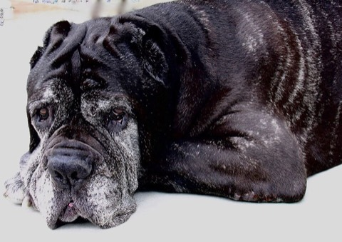
Any breedYoung, old or with health limits
Puppies; seniors; overweight or under-conditioned dogs; pregnancy; recent illness or surgery; heart, lung, neurologic, joint or metabolic disease; sensory or mobility differences
Choose a vet-approved distance on simple ground, and check on your dog often.
- One good day, medication or surgery doesn’t mean they’re ready for a longer route.
Good to know
Blind, deaf and three-legged dogs can hike well with the right route and handling.
Photo: 10-year-old Mastiff, Rlink at English Wikipedia, Public domain (Wikimedia Commons)